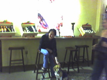
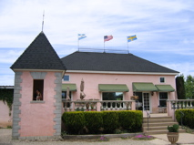
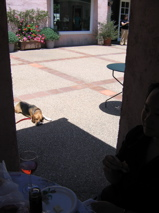
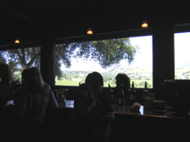
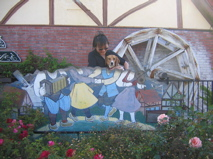
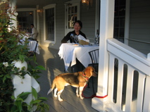
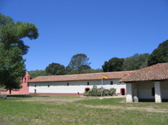
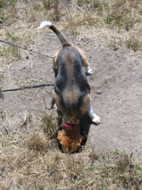
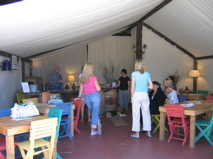
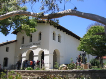

|

A little blurred |

Chateauneuf du Pink |

The nose knows |
|

Firestone |

Kicking up our heels back in Solvang |

The Ballard Inn |
|

Mission La Purisima Concepción |

Back to his roots |

Last taste of the weekend |
|

Mission San Luis Obispo de Tolosa |
||
|
|
||